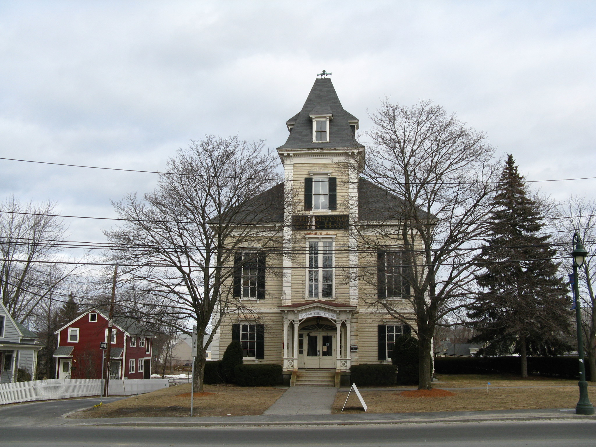

Town Hall
Built sometime around the start of the 19th century (the exact date was mysteriously lost), the Toluca Lake Town Hall stands proudly as a testament to the town's history and to the people that have lived here for so many years. Visit it to learn about prominent residents, past and present, the rich and often dark history of the town, and to join up with one of our
daily tours!